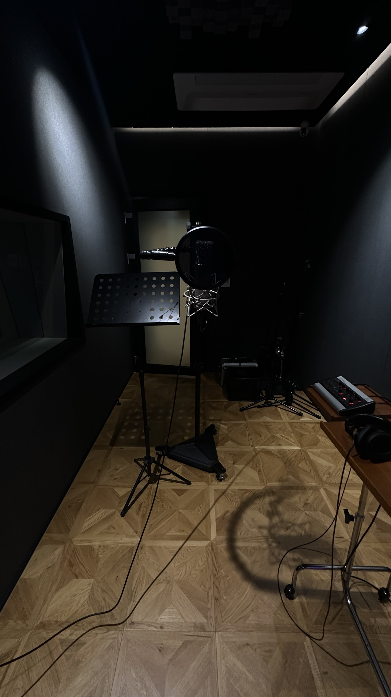
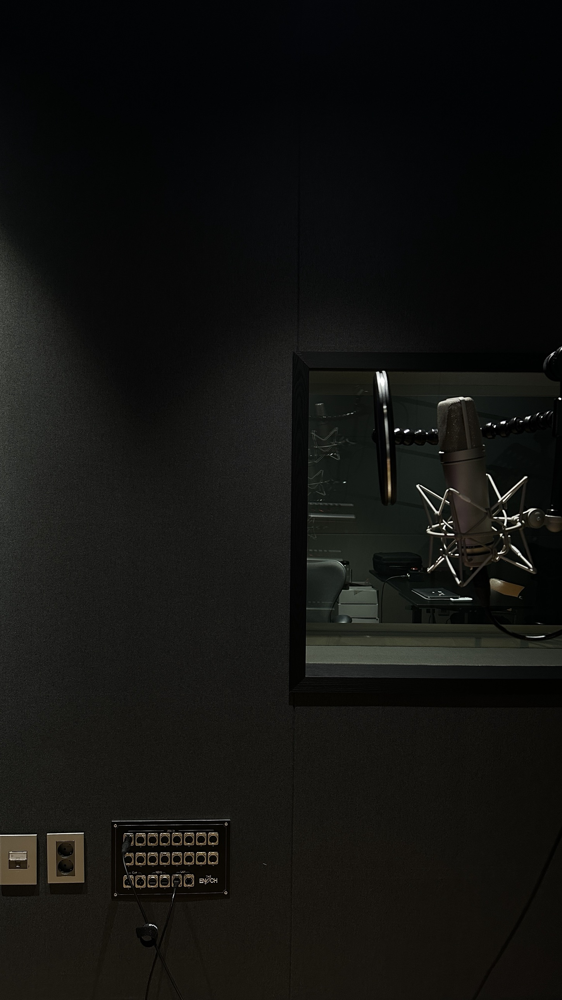
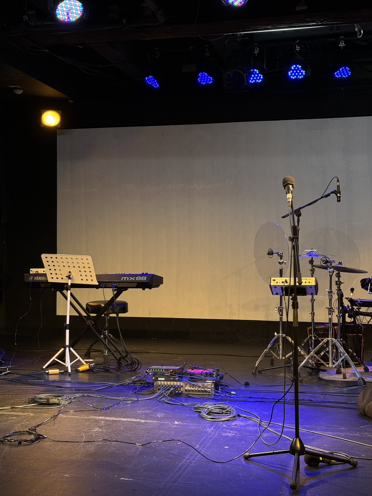
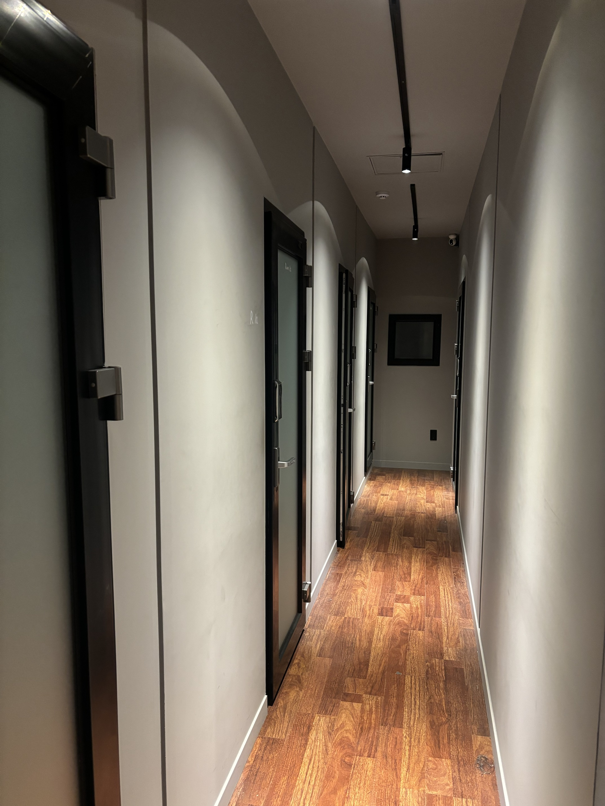
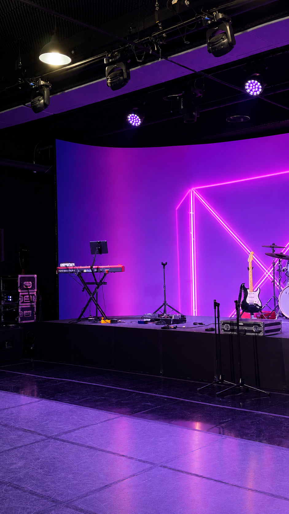
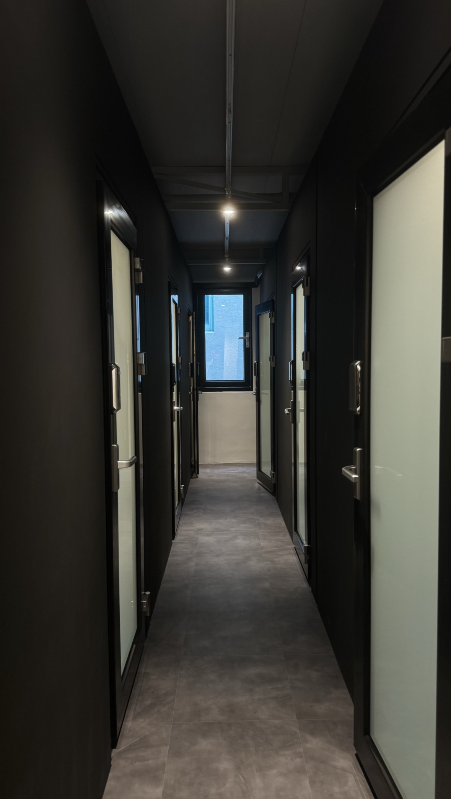
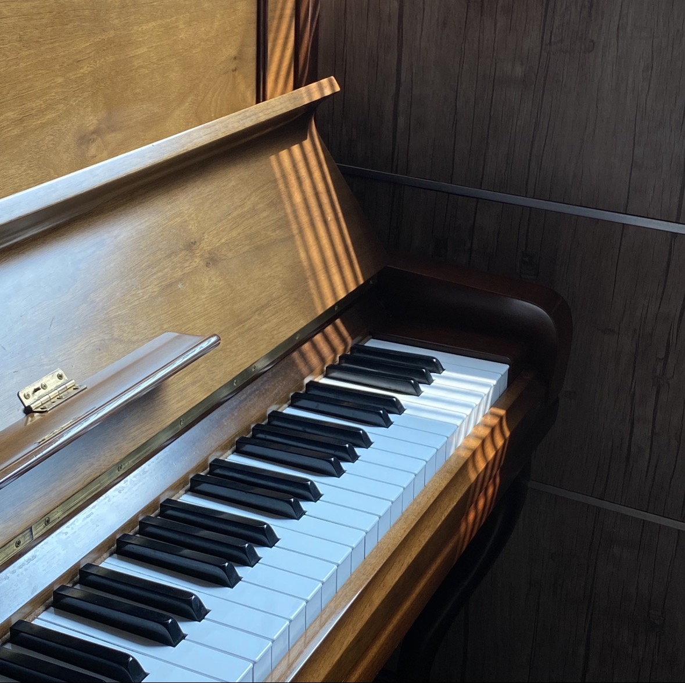
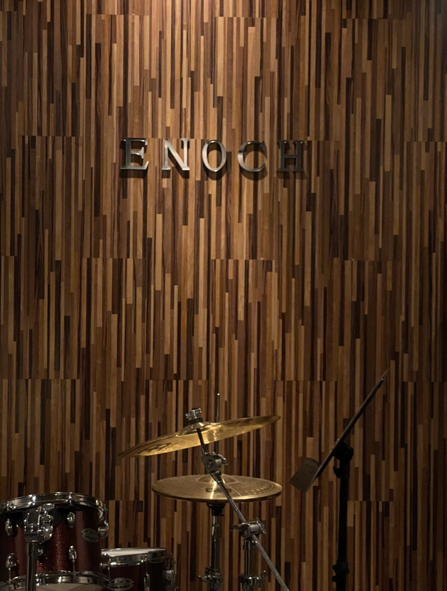

ENOCH MUSIC ACADEMY01 / 09
QUIET VOICE
내향형인 사람이
보컬을 배우면 좋은 이유

ENOCH MUSIC ACADEMY02 / 09
혼자일 땐
잘 나오던 소리

ENOCH MUSIC ACADEMY03 / 09
SHY SINGERS
무대가 무서웠다는 가수들,
생각보다 많습니다

ENOCH MUSIC ACADEMY04 / 09
국내에도
비슷한 이야기가 있어요

ENOCH MUSIC ACADEMY05 / 09
WHAT THEY SHARE
두려운 채로,
불렀습니다

ENOCH MUSIC ACADEMY06 / 09

ENOCH MUSIC ACADEMY07 / 09
PRACTICE
레슨이 없는 날에도
운영시간 안에 연습실을 자유롭게 쓸 수 있어요

ENOCH MUSIC ACADEMY08 / 09
시작은 한 소절,
작게

ENOCH MUSIC ACADEMY09 / 09
목소리가 작아도,
처음이 어색해도 괜찮아요
에녹실용음악학원 시흥점 · 경기도 시흥시 은행로 157 2층 · 010 3949 3666